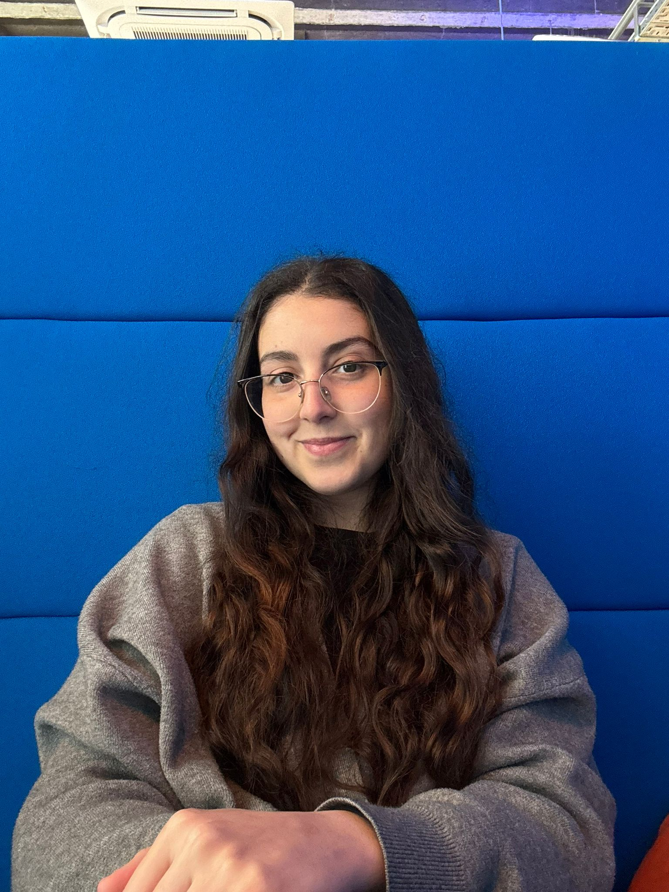

Welkom op mijn stageportfolio! Hier deel ik mijn ervaringen, projecten en leerprocessen tijdens mijn WPL-stage bij DeskDrive.
Ontdek mijn stage

Stagiair Developer
Ik ben een laatstejaarsstudent Graduaat Programmeren aan AP Hogeschool met een grote interesse in technologie en alles wat met digitale oplossingen te maken heeft.
Ik ben leergierig, gedreven en werk graag gestructureerd aan projecten. Nieuwe technologieën ontdekken geeft mij energie, en ik hou ervan om ideeën om te zetten in werkende applicaties.
Een kijkje achter de schermen
De eerste week van mijn stage! Veel kennismakingen, rondleidingen en de eerste stappen gezet in het database-project.
✅ Opstart
✅ Plan van aanpak opgesteld
Deze week heb ik veel geëxperimenteerd met het database-project. Veel trial-and-error, maar ook mooie doorbraken!
Testen in een eigen omgeving is essentieel. Documentatie helpt bij complexe projecten. Backup herstel vergt veel precisie en planning.
Deze week stond in het teken van verdiepen en optimaliseren. Ik onderzocht verschillende oplossingen voor permission-problemen en foutmeldingen, testte mijn opstelling lokaal en breidde dit daarna uit naar Docker-containers.
Deze week leerde ik hoe belangrijk het is om eerst een stabiele lokale testomgeving op te zetten voordat je overstapt naar Docker. Daarnaast kreeg ik meer inzicht in het oplossen van permission-problemen en het analyseren van foutmeldingen.
✅ Werkende lokale database-backup
✅ Succesvolle demo van de oplossing
......
....
✅ ...
✅ ...
Ik houd mijn notitieboekje bij en zal binnenkort meer interessante updates delen over mijn stage-ervaringen!
💡 Houd een digitaal notitieboekje bij tijdens de dag - zo vergeet je niets!
Neem gerust contact met mij op via LinkedIn of bekijk mijn GitHub repository.
Bekijk mijn Repo